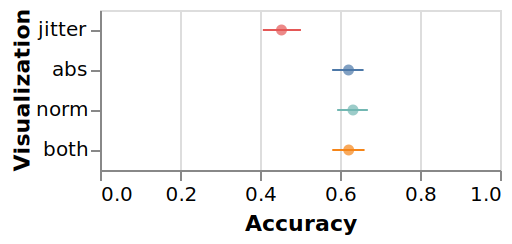
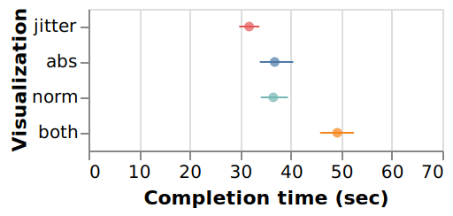

![]()
problems = [
{name: '(a) Line patterns', carX: 'Cylinders', carY: 'MPG'},
{name: '(b) Dot patterns', carX: 'Cylinders', carY: 'Cylinders'},
{name: '(c) Diagonal patterns', carX: 'MPG', carY: 'MPG'}
];
Plot.plot({
inset: 8,
grid: true,
color: {
legend: true,
},
marks: [
Plot.dot(cars, {x: problem.carX, y: problem.carY, r: 8 })
]
});Gatherplot: A Non-Overlapping Scatterplot
Under Review
This paper is under review on the experimental track of the Journal of Visualization and Interaction.
1 Introduction
Scatterplots—one of the most common types of statistical graphics (Cleveland and McGill 1988; Elmqvist, Dragicevic, and Fekete 2008; Utts 1996)—are often used to visualize two continuous variables using visual marks mapped to a two-dimensional Cartesian space, where the color, size, and shape of the marks can represent additional dimensions. It can also be used for exploring multidimensional datasets in the form of scatterplot matrices (SPLOM), where all the possible combinations of axes are presented in table form. However, scatterplots are so-called overlapping visualizations (Fekete and Plaisant 2002) in that the visual marks representing individual data points may begin to overlap each other in screen space in situations when the marks are large, when there is insufficient screen space to fit all the data at the desired resolution, or simply when several data points share the same value. In fact, realistic multidimensional datasets often contain categorical variables, such as nominal variables or discrete data dimensions with a small domain, which lead to many data points being mapped to the exact same screen position. This kind of overlap is known as overplotting (or overdrawing) in visualization, and is problematic because it may lead to data points being entirely hidden by other points, which in turn may lead to the viewer making incorrect assessments of the data. As can be seen in Figure 2, there are three situations for mapping variables to axes in scatterplots when overplotting is inevitable:
- Plotting categorical vs. continuous variables gives rise to line patterns (Figure 2(a));
- Plotting categorical vs. categorical variables gives rise to single dot patterns (Figure 2(b)); and
- Plotting the same continuous variable on both axes gives rise to diagonal line patterns (Figure 2(c)).
MPG and one categorical variable Cylinders showing limitations of scatterplots when plotting categorical variables on one or both axes.
Several approaches have been proposed to address this problem (Ellis and Dix 2007), the most prominent being transparency, jittering, and clustering techniques. The first, changing transparency, does not so much address the problem as sidestep it by making the visual marks semi-transparent so that an accumulation of overlapping points are still visible. However, this does not scale for large datasets, and also causes blending issues if color is used to encode additional variables. Jittering perturbs visual marks using a random displacement (Trutschl, Grinstein, and Cvek 2003) so that no mark falls on the exact same screen location as any other mark, but this approach is still prone to overplotting for large data. It also introduces uncertainty that is not aptly communicated by the scatterplot since marks will no longer be placed at their true location on the Cartesian space. Other approaches still attempt to organize overlapping marks into visual groups that summarize their distribution, such as histograms, violin plots, and kernel density estimation (KDE) plots (Fua, Ward, and Rundensteiner 1999; Mayorga and Gleicher 2013; Im, McGuffin, and Leung 2013). However, this comes at the cost of losing the identity of individual points, which can be problematic when filtering or searching; e.g, brushing data points is difficult in histograms (Im, McGuffin, and Leung 2013).
In this paper, we propose the concept of gathering as an alternative to scattering and jittering, and then show how we can use this visual transformation to define a novel visualization technique called a gatherplot. The gatherplot is an instance of a recently recognized family of visualization techniques called unit visualizations (Park et al. 2018) that maintain a strict mapping between every data item and its unique visual mark, improving the understandability over aggregated representations as well as enabling more natural interactions. Gathering is a generalization of the linear mapping used by scatterplots, and works by first partitioning the graphical axis into segments based on the data dimension and then organizing points into packed groups for each segment to avoid overplotting. This means that the gather operation relaxes the continuous spatial mapping commonly used for a graphical axis; instead, each discrete segment occupies a certain interval of screen space that maps to the same data value. This is communicated using graphical brackets on the axis that shows the value or interval for each segment (Figure 1(b)).
The contributions of our paper are the following: (1) the gatherplot technique that applies the gather operation to scatterplots to mitigate overplotting; and (2) results from a crowdsourced graphical perception study on the effectiveness of gatherplots.
Next in this paper, we review the literature on statistical graphics and overplotting. We then present the gather operation and use it to define gatherplots. We describe our implementation, followed by our crowdsourced evaluation. We finally describe the GatherLens technique. We close with conclusions and our future plans.
2 Background
Scatterplots are classic statistical data graphics with many design variations to address challenges of scale, complexity, and specific tasks (Sarikaya and Gleicher 2018). Our goal with gatherplots is to generalize scatterplots to a representation that maintains its simplicity and familiarity while eliminating overplotting. Partial or complete overplotting generally leads to visual clutter. Ellis and Dix (Ellis and Dix 2007) survey the literature and derive a general approach to reduce clutter. According to their treatment, there are three ways to reduce clutter in a visualization: by changing the visual appearance, by distorting visual space, or by presenting data over time. Some trivial but impractical mechanisms they list include decreasing mark size, increasing display space, or animating the data. Below we review more practical approaches based on appearance and distortion.
Appearance-based Methods
Practical appearance-based approaches to mitigate overplotting include transparency, sampling, kernel density estimation (KDE), and aggregation. Transparency changes the opacity of the visual marks, and has been shown to convey overlap for up to five occurrences (Zhai, Buxton, and Milgram 1996). However, there is still an upper limit for how much overlap is perceptible to the user, and the blending caused by overlapping marks of different colors makes identifying colors difficult.
Sampling uses stochastic methods to statistically reduce the data size to visualize (Dix and Ellis 2002). This may reduce the amount of overplotting, but since the sampling is random, it cannot be reliably eliminated. Furthermore, one of the core strengths of a scatterplot is its ability to show outliers effectively, whereas sampling will likely eliminate all outliers (due to the intrinsic nature of an outlier).
Aggregation methods can also mitigate overplotting. KDE (Silverman 1986) and other binned aggregations (Elmqvist and Fekete 2010; Fua, Ward, and Rundensteiner 1999; Mayorga and Gleicher 2013; Im, McGuffin, and Leung 2013) replace a cluster of marks with a single entity that has a distinct visual representation. Similarly, splatterplots (Mayorga and Gleicher 2013) combine individual marks with aggregated entities, using marks to show outliers and aggregated entities to show the general trends. While aggregation techniques are effective against overplotting for continuous variables, they fare poorly for categorical ones. Therefore, the generalized plot matrices (GPLOMs) (Im, McGuffin, and Leung 2013) were proposed to solve this particular problem by adopting non-homogeneous plots into a matrix. The technique uses a histogram for categorical vs. continuous variables, and a treemap for categorical vs. categorical variables. While effective in providing overview, aggregated techniques sacrifice some compatibility with scatterplots since they no longer maintain object identity, meaning that each visual mark no longer represents a single data point.
Cylinders and the vertical to Displacement in a car dataset.
Distortion-based Methods
Distortion-based techniques avoid overplotting by changing the spatial mapping of the space and have the advantage to keep the identity of individual data points. The canonical distortion technique is jittering, where a random displacement is used to subtly modify the exact screen space position of a data point (Figure 3). This has the effect of spreading data points apart so that they are easier to distinguish. However, naïve jittering mechanisms apply the displacement indiscriminately to all data points, regardless of whether they are overlapping or not. This has the drawback of distorting points away from their true location on the visual canvas, and still does not completely eliminate overplotting.
Bezerianos et al. (2010) use a more structured approach to displacement, where overlapping marks are organized onto the perimeter of a circle. The circle is grown to a radius so that all marks fit, which means that its size is also an indication of the number of grouped points. However, this mechanism still introduces uncertainty in the spatial mapping, and it is also not clear how well it scales for very dense data, as this can lead to a circle of arbitrarily large size. Nevertheless, the approach is a good example of how deterministic displacement can be used to great effect for eliminating overplotting.
Trutschl et al. (2003) propose a deterministic displacement (“smart jittering”) that adds meaning to the jittered position based on clustering results. This makes it easier to understand the resulting spatial display.
Data-aware Methods
The most advanced and effective overplotting mitigations are data-aware, in that they determine instances of overplotting in a chart. As a case in point, recent work by Chen et al. (2018) use animation to cycle the depth value of overlapping points in a scatterplot over time to ensure that every point is shown on top at some point in the rotation. This means that overplotting is alleviated by the notion of “guaranteed visibility over time” (Munzner et al. 2003) presented by Munzner et al. However, a common criticism for techniques designed to mitigate overplotting is that often do not scale to large dataset scales.
Shneiderman et al.(2000) propose a data-aware structured displacement approach called hieraxes, which combines hierarchical browsing with two-dimensional scatterplots. In hieraxes, a two-dimensional visual space is subdivided into rectangular segments for different categories in the data, and points are then coalesced into stacked groups inside the different segments. This work inspired gatherplots, which refines the layout and design of hieraxes further.
Microsoft’s SandDance (Microsoft Research 2011) use atomic visual marks as the building block of a highly interactive and visual interface built on smooth transitions between different spatial mappings. Drawing on an older experimental tool called Pivot from Microsoft Live Labs, SandDance now exists as a custom visual in the Microsoft Power BI tool.
Keim et al. (2010) propose generalized scatterplots that use a data-aware combination of overlapping and distortion to avoid overplotting in a scatterplot display. By balancing the overlapping and distortion, the user can achieve a display that conforms to their prior familiarity with scatterplots while retaining minimal occlusion and appropriate distortion of data points. However, in contrast, our gatherplot approach instead balances legibility and visual accuracy (the deviation from the true mapped position of a point). While gatherplots thus yield better legibility, they are also less visually scalable as well as accurate.
Hieraxes (Shneiderman 1996), SandDance (Microsoft Research 2011), and gatherplots (that we present in this paper) are all examples of a recently recognized family of visualizations called unit visualizations (Park et al. 2018) where the relation between data items and their mark is explicitly maintained. This identity property between data and display is exemplified in visualizations such as unit charts, dotplots, and scatterplots. It can be contrasted with aggregated visualizations that combine multiple data items intop a single visual mark, such as barcharts, piecharts, and histograms. Our gatherplots technique shows how a unit visualization can be designed, evaluated, and even deployed from the ground up based on unit visualization principles.
It is worth comparing gatherplots to ur own prior work on the Atom (Park et al. 2018) grammar for unit visualization.1 Atom is a general-purpose visualization grammar with gathering (packing with no overlap) as one of the visual layout options. In other words, the gatherplots technique can be more or less replicated using Atom. However, our focus in this paper is on specialized design aspects of gatherplots, including the interval marks, streamgraph layout, and layout modes. Also, where Atom is merely a grammar, this paper contributes a detailed user study involving the gatherplots technique in comparison to jittering.
Visualizing Categorical Variables
While we have already ascertained that scatterplots are not optimal for categorical variables, there exists a multitude of visualization techniques that have been specifically designed for such data (Bederson, Shneiderman, and Wattenberg 2002; Hofmann, Siebes, and Wilhelm 2000; Kosara, Bendix, and Hauser 2006). Simplest among them are histograms, which visualize the item count for each categorical value (Stevens 1946). Boxplots and violin plots show the distribution of continuous variables over categorical variables (Wickham and Stryjewski 2011). While hieraxes, histograms, and treemaps are effective in dealing with categorical variables, it is difficult to extend these to continuous vs. categorical variables. One way is to apply binning to continuous variables to create groups of values. However, the optimal number of bins depends on statistical characteristics of the data and the required task. Dot plots by Wilkinson (1999) renders continuous univariate variables without overplotting by stacking nodes within dot size. Dang et al. (2010) extended this to scatterplots by stacking nodes whose values are similar in 3D visual space. These pioneering works provide the theoretical background for the determination of optimal bin size for gatherplots.
Specialized versions of dot plots (Wilkinson 1999) have been imbued with their own monikers. The R graphics package presents a version called a stripchart, which allows for both jittering and stacking categorical data in a one-dimensional scatterplot. Beeswarm plots (Eklund and Trimble 2021) improves on stripcharts by allowing for closely packed, non-overlapping points. The seaborn (Waskom 2021) statistical data visualization library for Python extends these chart types to two-dimensional space. Stripplots (the name is somewhat unfortunate as it clashes with the strip plots technique for rendering univariate data as strips, yielding a plot reminiscent of a barcode) are 1D or 2D versions of stripcharts with random jittering where at least one axis is expected to be categorical. Swarmplots are 2D versions of beeswarm plots that place points to avoid overlap. In comparison, gatherplots partition the available space into stacked groups and then organize the marks inside each group into ordered grids. This yields a richer visual language that allows for sorting marks based on color and even resize marks to fill the visual space.
Another practical method for visualizing categorical data is for making inferences based on statistical and probabilistic data. Cosmides and Toody (1996) used frequency grids as discrete countable objects, and Micallef et al. (2012) extend this with six different area-proportional representations of categorical data organized into different classes. Huron et al. (2013) suggested using sedimentation as metaphor where individual objects coming from a data stream gradually transform into aggregated areas, or strata.
Finally, Kinetica (Rzeszotarski and Kittur 2014), beyond presenting a novel touch- and physics-based interaction for 2D scatterplots, provides a clustering algorithm where visual marks clump together with collision detection (and thus no overlap) based on their data ranges. The clusters are similar to the partioned clusters in gatherplots, but are organically shaped, not arranged in orderly grid lines, and thus harder to compare. The attraction approach used in Kinetica is reminiscent of the gravity model used for marks in dust & magnet (Yi et al. 2005).

3 The Gather Transformation
Position along a common scale is the most salient of all visual variables (Bertin 1983; Cleveland and McGill 1985), and so mapping a data dimension to positions on a graphical axis is a standard operation in data visualization. We call this mapping a visual transformation. However, most statistical treatments of data, such as Stevens’ classical theory on the scale of measurements (Stevens 1946), do not take the physical properties of display space into account. This is our purpose in the following section.
Definition: The Gather Transformation
We build on the previous idea of structured displacement (Bezerianos et al. 2010; Shneiderman et al. 2000) by proposing a novel visual transformation function called a gather transformation that non-linearly segments a graphical axis and organizes data points in each segment to eliminate overplotting. More specifically, the graphical axis is subdivided into contiguous segments, one for each value in the categorical axis. Data points as visual marks are then packed into the available display space without overlap (i.e., using a regular spacing).
Several different methods exist for adapting the gather transformation to a dataset. One approach is to keep the segments of equal size and find a constant visual mark size that ensures that all points fit within the most dense segment. The constant mark size makes visual comparison straightforward. Another approach is to adapt segment size to the density of the data while still keeping the mark size constant. This will minimize empty space in the visual transformation and allows for maximizing mark size. A third approach is to vary mark size proportionally to the number of points in a segment. This will make comparison of the absolute number of points in each segment difficult, but may facilitate relative comparisons if marks are distinguished in some other way (e.g., using color).
For data dimensions that have a very large number of unique values, it often makes sense to first quantize (“bin”) the data so that the number of elements is kept manageable (on the order of 10 or less for most visualizations). For example, a data dimension representing a person’s age might heuristically be binned into ranges of 10 years: 0-9 years, 10-19 years, 20-29 years, and so on.
In a gather transformation, the coordinate axis has been partitioned into segments, where the order of segments on the axis depends on the data. For nominal data, the segments can be reordered freely, both by the algorithm and by the user. For ordinal or quantized data, the order is given by the data relation. Furthermore, it often makes sense to be able to order points inside each segment using the gathering transformation function, for example using a second data dimension (possibly visualized using color) to group related items together.
Appropriate visual representations of data where the gather transformation has been applied are also important. The stacked entities of gathered points should maintain object identity, so that each constituent point and their size is discernible as a discrete visual mark. Similarly, a visual representation of the segmented graphical axis should externalize the segments as labeled intervals instead of labeled major and minor ticks; this will also communicate the discontinuous nature of the axis itself to the viewer.
Using the Gather Transformation
Gatherplots minimize overplotting by segmenting each axis into intervals. This allows us to resize segments according to the number of items falling into each segment so that segments with many data points become proportionally larger than those with fewer points. Finally, if the data dimensions represent nominal data, it may make sense to use a global segment ordering function so that there is a minimum of lateral movement for the majority of points as they connect to adjacent axes. This will also minimize line crossings between the parallel axes. This particular visualization technique—a parallel coordinate plot with the gather transformation applied to each graphical axis—is essentially equivalent to parallel sets (Kosara, Bendix, and Hauser 2006).
In fact, by applying our generalized gather transformation to the axis, we are actually proposing a new type of stacked visualization where each entity is still represented by lines. In a sense, this technique combines parallel coordinates and parallel sets because the grouped lines maintain the illusion of a single entity for an axis with nominal categorical values (similar to parallel sets), yet integrates directly with a parallel coordinate axis with continuous values. The main difference is that the new parallel coordinate/set variation allows each axis to be either categorical or continuous, meaning that one axis can represent the gender and the next can represent the height of person.
4 Gatherplots: A 2D Gathering Representation
Applying gathering to two perpendicular axes defining a Cartesian space results in a gatherplot: a 2D distortion-based extension of scatterplots that gathers data points into stacked groups, thereby eliminating overplotting without losing the identity of individual data points. Figure 5 provides an interactive gatherplot. Compared to jittering, which relies on random permutation, gathering organizes visual marks according to visual features, so that the resulting group of objects forms a meta-object. According to Haroz and Whitney (2012), grouping marks by feature helps in performing perceptual tasks such as finding outliers, counting items, and seeing trends. The technique is particularly designed for visualizing categorical variables. Below we discuss the open design parameters for the technique, including layout, aspect ratio, and item shapes.
Layout
Gatherplots eliminate overplotting by gathering marks with similar visual properties into stacked groups. This is inspired by previous works such as hieraxes (Shneiderman et al. 2000) or frequency grids (Micallef, Dragicevic, and Fekete 2012; Cosmides and Tooby 1996). However, there are many design possibilities for organizing the visual representation depending on the context, especially on the size distribution of each groups, the aspect ratio of assigned space, and the task at hand. As a result, we derive the following three layout modes (see Figure 4):
Absolute mode: Here stacked groups are sized to follow the aspect-ratio of the assigned region. The size of the items are determined by the maximum length dots which can fill the assigned region without overlapping. This means with the same assigned space, the groups with the maximum number of members determines the overall size of the nodes (Figure 4(a)).
Normalized mode: In this mode, the mark size and aspect ratio is adapted so that every stacked group has equal dimensions. This makes it easier to investigate ratios when the user is interested in the relative distributions of subgroups rather than the absolute number of members.
Normalized mode is useful for two specific tasks:
Finding the ratio of the subgroups in a group (Figure 4). Because groups of different size are normalized to the same geometric area, any comparison results in a relative comparison, which can aid statistical Bayesian reasoning (Micallef, Dragicevic, and Fekete 2012).
Finding the distribution of outliers. When there are many items on the screen for absolute mode, all marks must be reduced in size. This can make outliers hard to locate. When normalized mode is used, the outliers are expanded to fill the assigned space, making them easier to see.
Streamgraph mode: Here stacked groups are reorganized so that they maintain the same number of elements in their shorter edge. This mode is used for regions where the ratio of width and height are drastically different (in our prototype implementation, we use a heuristic threshold aspect ratio value of 3 for activating this mode). This means there are usually many times more groups in the axis in parallel with shorter edges. A good example is for visualizing the population distribution with regards to gender and age; the resulting gatherplot approaches ThemeRiver (Havre, Hetzler, and Nowell 2000) as the number of entities increases (Figure 4(c)).
The choice between absolute and streamgraph mode happens automatically based on the aspect ratio of assigned space and without the need for user intervention. Therefore, only a simple interaction is required to toggle between absolute and normalized mode. However, we do expose a setting to manually toggle between these modes as well.
Managing Continuous Variables
To use gatherplots for continuous variables, we apply binning to partition the variable into discrete intervals. The resulting visualization resembles dots plots by Wilkinson (1999), where bin size is equal to dot size. The size of individual bins is important for binning because it determines the spatial accuracy and legibility of the visualization. We define spatial accuracy as the degree to which a mark in a gatherplot is mapped to the actual position it would have been mapped if the mapping had been continuous (like for a regular scatterplot). Legibility, on the other hand, is the ability for a user to perceive individual marks in a unit visualization.
Wilkinson proposed \(.25n^{-1/2}\) as the optimal dot size for dot plots (although he also noted that an implementation should reduce size for overflow situations). This creates reasonable dot plots for fixed aspect ratio of 5 to 1, which is common in statistical charts assuming normal distribution of nodes.
However, gatherplot requires two different assumptions: First, the aspect ratio varies according to the space given to the categorical variables. Second, the dot size or bin size is determined by the global maximum in the dataset, which may not be in the same cluster. Furthermore, because bin size is the same as dot size, selecting bin size can be thought of as a trade-off between accuracy and legibility. Using very small bin size and dot size increases the spatial accuracy, but results in poor legibility, and vice versa.
Balancing accuracy vs. legibility is common in visualization for large datasets; for example, splatterplots limit the information shown to users based on the available visual space (Mayorga and Gleicher 2013). Similarly, gatherplots choose bin size based on spatial accuracy and legibility. When the visual space is small, we use a comparably large bin size to increase dot size, thus resulting in poor spatial accuracy and high legibility; for larger space allocations, the bins can be made smaller to increase accuracy without loss of legibility. Our implementation iteratively finds a bin size as a trade-off between mark size and the most crowded bin; this is shown in Figure 6. Overall, this is an inherent weakness of unit visualizations: the need to make individual marks distinct means that the visual representation may become distorted, and the scalability of the visualization suffers overall.
Figure 7 shows how gatherplots handle the situation when continuous variables are assigned to both axes, causing both to be binned. The plot is using normalized mode with two random variables. The normalized mode makes it easier to identify the outliers and the distribution of outliers. Furthermore, the case of scatterplots with the same continuous variables on both axes can be treated as a special case of continuous vs. categorical variables. Here, the gatherplot is rotated to maintain integrity with scatterplots (Figure 1(c)).
One limitation of gatherplots is that the technique requires binning to manage a continuous variable, yet binning creates arbitrary boundaries that can be misleading. However, using both gatherplots and scatterplots in different views makes this problem less severe because the analyst can simply choose the visual representation most suited for a particular task.

Undefined Axis Mapping
Scatterplots have traditionally been used to view correlations between two variables. However, for a multidimensional exploration, one subtle difficulty is when the user wants to see only the effect of a single variable. In gatherplots, the logical extension of an undefined axis is the aggregation of all nodes in a single group along that axis. Figure 8 shows an example of this using a dataset on survivors of the Titanic.


Visual Design
Gatherplots build on the same visual language as scatterplots. However, some aspects are different; below we discuss our design choices for visual mark shape as well as tick marks.
Visual Marks
Scatterplots typically use a small circle or dot as a visual representation for items, but many variations exist that use glyph shapes to convey multidimensional variables (McDonnel and Elmqvist 2009; Tufte 1983; Cleveland and McGill 1988; Chernoff 1973). This is also potentially useful for gatherplots; the layouts generated by gathering can contain any visual mark, even aggregated ones like pie charts or bar charts.
In this paper we focus on unit visual marks, i.e. with one mark per data item. In normalized mode, sometimes the aspect ratio of visual marks changes according to the aspect ratio of the space assigned to that value. Also, as gathering changes the size of marks to fit in one cluster, sometimes the marks size becomes too small or too large compared to other marks. This results in several unique design considerations for item shapes.
Based on our experience testing several alternate designs, we recommend using a rectangle with constant rounded edge. Using constant rounded edge allows the nodes to be circular when the mark is small, as in Figure 4(b), and a rectangle to show the degree of stretching, as shown in Figure 4(b). As a disadvantage, it does yield less differentiable individual elements. Stroke lines can be useful in some situations, but easily become dominant when nodes shrink below a certain size.
Interval Tick Marks
Because we are representing ranges rather than single points, the single line type tick marks for scatterplots are not appropriate for gatherplots; instead, ticks should communicate the partitioned segments on the axes. Without this visual representation, when the user is confronted with a number, it can be confusing to determine whether adjacent nodes with different offset has same value or not. Figure 9 shows design alternatives of tick mark for representing ranges. Our implementations use bracket type markers to reduce density from adjacent ticks.
Interaction
Gatherplots support the same types of interactions as scatterplots. However, some additional interaction techniques are required to specifically control the gathering transformation.
For example, when exploring multidimensional datasets, it is crucial to have a mechanism to filter unwanted data. To support this process in gatherplots, we provide an optional mechanism to go back to the original continuous linear scale function. We allow each axis tick have an interactive control to be filtered out (minimize) or focused (maximized). This is called axis folding, because it can be illustrated by folding a paper. When minimized or folded, the visualization space is shrunk by applying linear scales instead of non-linear gather scales. This results in overplotting, as if a scatterplot was used for that axis. Maximization simply folds all other values except the value of the interest to assign maximum visual space to that value. Figure 10 shows axis folding applied to second class adult passengers in the Titanic dataset.
![Gatherplot showing the passengers of the *Titanic*. Class (First, Second, Third, Crew) has been mapped to the X axis and Age (Child, Adult) to the Y axis. Color is used for the boarding Port; Cherbourg, Belfast, Southhampton, and Queenstown. Child, Second Class, and Crew has been minized to not show details. First and Third Class Adults are showing as large blocks of marks organized in an orderly grid. For the first class, the Ports are mostly evenly distributed. For Third Class, most of them boarded in Southhampton.](figures/axis-folding.svg)
Implementation
We have implemented a web-based demonstration of gatherplots using D3 and Angular. The prototype allows users to load various datasets into a gatherplot. The visualization can be compared to scatterplots and jittered scatterplots with a single click.
5 Evaluation
This study was designed to demonstrate the effectiveness of gatherplots, in particular its different layout modes with categorical vs. categorical variables. Crowdsourcing platforms have been widely used and have shown to be reliable platforms for evaluation studies (Paolacci, Chandler, and Ipeirotis 2010; Willett et al. 2013). Therefore, we conducted our experiment on Amazon Mechanical Turk. This also gave us the opportunity to study the utility of the technique for the general population, who do not have specific statistical training. Research materials associated with the study can be found on OSF at https://osf.io/bk9cx/.
Experimental Design
We selected jittered scatterplots as the baseline condition, as this technique is a widely accepted standard technique maintaining consistency with scatterplots. We also wanted to measure the efficiency of different modes of gatherplots. Therefore, we designed the experiment to have four conditions: scatterplots with jittering (jitter), gatherplots with absolute mode (absolute), gatherplots with normalized mode (normalized), and gatherplots with a toggle to switch between absolute and normalized mode (both). We adopted a between-subjects design to eliminate learning effects from experiencing other modes.
Participants
A total of 240 participants (103 female) completed our survey. Participants were compensated for their time and labor with compensation consistent with the U.S. federal minimum wage ($7.25/hour at the time of research). Because some questions asked about concepts of absolute numbers and probability, we limited participants to the United States to reduce the influence of language. To ensure the quality of the workers, the qualification of workers were the approval rate of more than 0.95 with number of hits approved to be more than 1,000. Only three of 240 participants reported not using English as their first language. 119 people had more than bachelor’s degree, with 42 people having a high school degree. We filtered random clickers by removing any trials where the completion time was shorter than a reasonable time (5 seconds). This yielded a total of 211 participants.
Task
Scatterplots can support many types of tasks (Sarikaya and Gleicher 2018). Based on Sarikaya and Gleicher’s analysis (2018), we selected retrieving a value as a low-level task, and comparing and ranking as a high-level task. For the comparing and ranking task, two different types of questions were asked: the tasks to consider absolute values such as frequency and tasks that consider relative values such as percentage. Therefore, for one visualization, 5 different questions were generated. For gatherplots, our interest is in the difference between task considering absolute values and relative values. The five tasks are as follows:
- T1: retrieve value considering one subgroup.
- T2: comparing absolute size of subgroup between groups.
- T3: ranking absolute size of subgroup between groups.
- T4: comparing relative size of subgroup between groups.
- T5: ranking relative size of subgroup between groups.
To reduce the chance of one chart being optimal by luck for a specific task, two charts of same problem structure were provided. This yielded a total of 10 questions for each participant. Each question was followed by the question asking confidence of estimation with a 7-point Likert scale, and the time spent for each question was measured.
![Screenshot of a survey question with a gatherplot visualizing the Titanic passenger dataset on top and a question at the bottom. The gatherplot shows Class (First, Second, Third, Crew) on the X axis and Sex (Female, Male) on the Y axis. This yields a grid with two rows and four columns. Marks are colored based on whether they survived or not; cyan for yes, and blue for no. Marks are freely sized to fill the available size in each grid cell. The question at the bottom says 'Among the four groups, the number of female survivors are the highest in first class.' The options are Agree, Disagree, or Don't Know/Can't Determine. In particular, in the First Class Female grid cell, there is an absolutely majority of cyan cells with only very few blue cells. The proportion of cyan cells is much lower for the Male First Class passengenrs, indicating that the statement is true.](figures/study1.png)
Dataset
We used a dataset on the survivors of the sinking of the Titanic in 1912. Each of the 2,201 survivors had four dimensions, which were all categorical variables: class (4 levels), sex (2 levels), port of entry (4 levels), and survival status (2 levels). The five tasks above were asked for two views with different dimensions. One view visualized class on X-axis, sex on Y-axis, and survival using color. The second view visualized survived on the X-axis, class on the Y-axis, and port of entry using color.
Figure 11 shows an example study stimulus screen for the Titanic dataset using a normalized (space-filling) gatherplot for task T4. The OSF repository contains a file qualtrics-study.pdf showing a full run of an experiment (10 questions).
Hypotheses
We believe that different types of tasks will favor from different type of layouts. Therefore, our hypotheses are as follows:
H1 - For retrieving value considering one subgroup (T1), both absolute and normalized modes will yield better accuracy than jitter mode.
H2 - For tasks considering absolute values (T2 and T3), absolute mode will yield the best accuracy over other modes.
H3 - For tasks considering relative values (T4 and T5), normalized mode will yield the best accuracy over other modes.
Results
The results were analyzed with respect to the accuracy (correct or incorrect), time spent, and confidence of estimation. Based on our hypotheses, we analyzed the different modes of layout for each type of question: retrieve value, absolute value task, and relative value task. In total, we recruited 42 participants for jitter, 56 participants for absolute, 56 participants for normalized, and 57 participants for interactive mode. The OSF repository contains code and data for replicating our data analysis.


Accuracy
Accuracy performance results are summarized in Figure 12 (a), with detailed accuracy results by visualization type and task in Figure 13 (a). The number and percentage of participants who answered correct and incorrect answers are shown in Figure 14.
Based on the effect sizes and 95% confidence intervals, we see evidence that jittering yielded lower accuracy than other conditions, which were more or less equivalent in accuracy. This trend seems to mostly persist across all five tasks.


Completion Time
Completion time performance results are summarized in Figure 12 (b), with detailed accuracy results by visualization type and task in Figure 13 (b). For the retrieve-value task (T1), on average, the completion time (sec) for each interface was for jitter 31.79, absolute 36.83, normalized 36.55, and both 49.21. For the absolute-value task (T2 and T3), on average, the completion time (sec) for each interface was for jitter 29.45, absolute 37.98, normalized 34.84, and both 50.73. For relative-value task (T4 and T5), on average, the completion time for each interface was for jitter 31.77, absolute 32.27, normalized 34.95, and both 46.60.
Based on the results, we see evidence that the both condition (absolute and normalized accessed using a toggle) yielded longer completion times than the other conditions, although this is not consistent across tasks. There is also some evidence that jitter on average yielded a shorter completion time, but again not consistently across all five tasks.
Confidence
The participants self-reported level of confidence was reported using a 7-point Likert-scale rating. Confidence performance results are summarized in Figure 12 (c), with detailed accuracy results by visualization type and task in Figure 13 (c). This data shows some evidence that jittering and normalized mode instilled lower confidence than absolute and both modes.
For the value-retrieving task (T1), a Kruskal-Wallis non-parametric test revealed that the type of interface had significant impact on the confidence level (\(\chi^2(3) = 74.57 p < 0.01\)). The mean rating for each interface was for jitter 4.8, absolute 6.3, normalized 6.0, and both 6.25. A post-hoc Pairwise Wilcoxon Rank Sum test was employed with Bonferroni correction to adjust for multiple comparisons. The jitter interface was significantly lower than the other three modes ($ p < 0.01$ for all cases). There was no difference between absolute, normalized, and both interfaces.
For absolute-value tasks (T2 and T3), a Kruskal-Wallis non-parametric test revealed that the type of interface had significant impact on the confidence level (\(\chi^2(3) = 18.32, p < 0.01\)). The mean rating for each interface was jitter 5.4, absolute 5.7, normalized 5.0, and both 5.8. A post-hoc Pairwise Wilcoxon Rank Sum test was employed with Bonferroni correction to adjust for multiple comparisons. The interface with both modes was significantly higher than normalized and jitter mode (\(p < 0.01\) for both); however, there was no difference with the absolute mode. The interface with absolute mode was significantly higher than normalized and jitter mode (\(p < 0.01\)).
For relative-value tasks (T4 and T5), a Kruskal-Wallis non-parametric test revealed that the type of interface did not have significant impact on the relative tasks (\(\chi^2(3) = 4.1, p = 0.2\)). The mean rating was jitter 4.7, absolute 4.9, relative 4.9, and both 4.8.
One possibility for explaining this result is that the relative task is more difficult than the other tasks. The low correct percentage of questions are also shown in Figure 14. To see that, we tested the confidence level between task types. A Kruskal-Wallis non-parametric test revealed that the type of task had significant impact on the confidence level (\(\chi^2(2) = 148.1, p < 0.01\)). The mean rating for retrieving value 5.9, absolute 5.5, and normalized 4.8. The post-hoc Pairwise Wilcoxon Rank Sum test was employed with Bonferroni correction to adjust for multiple comparisons, and showed that all three task types were significantly different (\(p < 0.01\) for all cases).
6 Discussion
Our results show that the gatherplots technique enable people to assess data distribution more quickly and more correctly than when using jittered scatterplots. It is plausible that the ordered grid layout used for marks in the gatherplots technique better supports quickly estimating (or even counting) the marks compared to merely randomly jittering the points. However, there are several limitations to this work that may affect its generalizability and overall utility.
By virtue of being a unit visualization (Park et al. 2018), where each data point is assigned a unique visual mark, the gatherplots technique is not primarily designed for large scale datasets. For situations with several thousands or more data points, the corresponding visual marks will become so small that they are not easily distinguishable as individual units. Accordingly, the user study presented in this paper was limited to the Titanic dataset with only some 2,200 data points. We suspect that many of these findings will not bear out for datasets only an order of magnitude larger.
Analogously, gatherplots are not suitable for conveying datasets with a large number of data dimensions. The technique is currently only designed with a single categorical dimension per geometric axis, plus one assigned to mark color. The axes could presumably be subdivided into multiple categories, similar to the Dataopsy technique (Hoque and Elmqvist 2024), but that is beyond the scope of this paper.
We chose to include an interactive setting—``both’’—in our experiment where participants were allowed to toggle between absolutel and normalized mode. However, the results show that this condition yielded significantly longer completion times with little to no improvement in accuracy or confidence. The increased completion time may not be a surprise because of the toggle interaction. Furthermore, the fact that both absolute and normalized mode had no specific benefit in their own right also explains why their combination was also not superior.
Finally, the gatherplots technique includes carefully designed interval marks to convey the fact that a gatherplot axis is partitioned rather than continuous. Nevertheless, we have not evaluated the efficacy of this visual language. Since regular scatterplots use continuous axes, it is not clear how well a novice user will grasp the partitioned nature of a gatherplot.
7 Conclusion and Future Work
We have proposed the concept of the gather transformation, which enables space-filling layout without overdrawing while maintaining object constancy. We then applied this transformation to scatterplots, resulting in gatherplots, a generalization of scatterplots, which enable overview without clutter. While gatherplots are optimal for categorical variables, it can also be used to ameliorate overplotting caused by continuous ordinal variables. We discussed several aspects of gatherplots including layout, coloring, tick format, and matrix formations. We also evaluated the technique with a crowdsourced user study showing that gatherplots are generally more effective than jittering, and absolute and relative mode serve specific types of tasks better. Finally, we applied the gathering transformation to a Magic Lens interaction for local control; this lens has three different layout modes.
We believe that gathering is a general framework that captures the transition between overlapping and space-filling visualizations while maintaining object identities. In the future, we plan on studying the application of this framework to other visual representations. For example, overplotting is a common problem when visualizing categorical variables in a parallel coordinates plot. Parallel sets aggregate elements for the same value of a categorical variable into blocks, but loses the identity of objects. By applying the gathering framework, parallel sets can be reconstructed to render individual lines instead of block lines, which would enable combining both categorical and continuous variables. Furthermore, we also want to study additional gathering-based interaction techniques beyond the GatherLens proposed here.
References
Bederson, Benjamin B, Ben Shneiderman, and Martin Wattenberg. 2002. “Ordered and Quantum Treemaps: Making Effective Use of 2D Space to Display Hierarchies.” ACM Transactions on Graphics 21 (4): 833–54. https://doi.org/10.1145/571647.571649.
Bertin, Jacques. 1983. Semiology of Graphics. Madison, WI, USA: University of Wisconsin Press.
Bezerianos, Anastasia, Fanny Chevalier, Pierre Dragicevic, Niklas Elmqvist, and Jean-Daniel Fekete. 2010. “GraphDice: A System for Exploring Multivariate Social Networks.” Computer Graphics Forum 29 (3): 863–72. https://doi.org/10.1111/j.1467-8659.2009.01687.x.
Chen, Helen, Sophie Engle, Alark Joshi, Eric D. Ragan, Beste F. Yuksel, and Lane Harrison. 2018. “Using Animation to Alleviate Overdraw in Multiclass Scatterplot Matrices.” In Proceedings of the ACM Conference on Human Factors in Computing Systems, 417:1–12. ACM. https://doi.org/10.1145/3173574.
Chernoff, Herman. 1973. “The Use of Faces to Represent Points in k-Dimensional Space Graphically.” Journal of the American Statistical Association 68 (342): 361–68. https://doi.org/10.2307/2284077.
Cleveland, William S., and Marylyn E. McGill. 1988. Dynamic Graphics for Statistics. Belmont, CA, USA: Wadsworth & Brooks/Cole.
Cleveland, William S., and R. McGill. 1985. “Graphical Perception and Graphical Methods for Analyzing Scientific Data.” Science 229 (4716): 828–33. https://doi.org/10.1126/science.229.4716.828.
Cosmides, Leda, and John Tooby. 1996. “Are Humans Good Intuitive Statisticians After All? Rethinking Some Conclusions from the Literature on Judgment Under Uncertainty.” Cognition 58 (1): 1–73. https://doi.org/10.1016/0010-0277(95)00664-8.
Dang, Tuan Nhon, Leland Wilkinson, and Anushka Anand. 2010. “Stacking Graphic Elements to Avoid over-Plotting.” IEEE Transactions on Visualization and Computer Graphics 16 (6): 1044–52. https://doi.org/10.1109/TVCG.2010.197.
Dix, Alan, and Geoffrey Ellis. 2002. “By Chance - Enhancing Interaction with Large Data Sets Through Statistical Sampling.” In Proceedings of the ACM Conference on Advanced Visual Interfaces, 167–76. New York, NY, USA: ACM. https://doi.org/10.1145/1556262.1556289.
Eklund, Aron, and James Trimble. 2021. Beeswarm: The Bee Swarm Plot, an Alternative to Stripchart. https://cran.r-project.org/package=beeswarm.
Ellis, Geoffrey, and Alan Dix. 2007. “A Taxonomy of Clutter Reduction for Information Visualisation.” IEEE Transactions on Visualization and Computer Graphics 13 (6): 1216–23. https://doi.org/10.1109/TVCG.2007.70535.
Elmqvist, Niklas, Pierre Dragicevic, and Jean-Daniel Fekete. 2008. “Rolling the Dice: Multidimensional Visual Exploration Using Scatterplot Matrix Navigation.” IEEE Transactions on Visualization and Computer Graphics 14 (6): 1539–1148. https://doi.org/10.1109/TVCG.2008.153.
Elmqvist, Niklas, and Jean-Daniel Fekete. 2010. “Hierarchical Aggregation for Information Visualization: Overview, Techniques and Design Guidelines.” IEEE Transactions on Visualization and Computer Graphics 16 (3): 439–54. https://doi.org/10.1109/TVCG.2009.84.
Fekete, Jean-Daniel, and Catherine Plaisant. 2002. “Interactive Information Visualization of a Million Items.” In Proceedings of the IEEE Symposium on Information Visualization, 117–24. Los Alamitos, CA, USA: IEEE Computer Society. https://doi.org/10.1109/INFVIS.2002.1173156.
Fua, Ying-Huey, Matthew O. Ward, and Elke A. Rundensteiner. 1999. “Hierarchical Parallel Coordinates for Exploration of Large Datasets.” In Proceedings of the IEEE Conference on Visualization, 43–50. https://doi.org/10.1109/VISUAL.1999.809866.
Haroz, Steve, and David Whitney. 2012. “How Capacity Limits of Attention Influence Information Visualization Effectiveness.” IEEE Transactions on Visualization and Computer Graphics 18 (12): 2402–10. https://doi.org/10.1109/TVCG.2012.233.
Havre, Susan, Beth Hetzler, and Lucy Nowell. 2000. “ThemeRiver: Visualizing Theme Changes over Time.” In Proceedings of the IEEE Symposium on Information Visualization, 115–23. https://doi.org/10.1109/INFVIS.2000.885098.
Hofmann, Heike, Arno P. J. M. Siebes, and Adalbert F. X. Wilhelm. 2000. “Visualizing Association Rules with Interactive Mosaic Plots.” In Proceedings of the ACM Conference on Knowledge Discovery and Data Mining, 227–35. https://doi.org/10.1145/347090.347133.
Hoque, Md. Naimul, and Niklas Elmqvist. 2024. “Dataopsy: Scalable and Fluid Visual Exploration Using Aggregate Query Sculpting.” IEEE Transactions on Visualization and Computer Graphics 30 (1): 186–96. https://doi.org/10.1109/TVCG.2023.3326594.
Huron, Samuel, Romain Vuillemot, and Jean-Daniel Fekete. 2013. “Visual Sedimentation.” IEEE Transactions on Visualization and Computer Graphics 19 (12): 2446–55. https://doi.org/10.1109/TVCG.2013.227.
Im, Jean-François, Michael J. McGuffin, and Rock Leung. 2013. “GPLOM: The Generalized Plot Matrix for Visualizing Multidimensional Multivariate Data.” IEEE Transactions on Visualization and Computer Graphics 19 (12): 2606–14. https://doi.org/10.1109/TVCG.2013.160.
Keim, Daniel A., Ming C. Hao, Umeshwar Dayal, Halldor Janetzko, and Peter Bak. 2010. “Generalized Scatter Plots.” Information Visualization 9 (4): 301–11. https://doi.org/10.1057/ivs.2009.34.
Kosara, Robert, Fabian Bendix, and Helwig Hauser. 2006. “Parallel Sets: Interactive Exploration and Visual Analysis of Categorical Data.” IEEE Transactions on Visualization and Computer Graphics 12 (4): 558–68. https://doi.org/10.1109/TVCG.2006.76.
Mayorga, A., and Michael Gleicher. 2013. “Splatterplots: Overcoming Overdraw in Scatter Plots.” IEEE Transactions on Visualization and Computer Graphics 19 (9). https://doi.org/10.1109/TVCG.2013.65.
McDonnel, Bryan, and Niklas Elmqvist. 2009. “Towards Utilizing GPUs in Information Visualization: A Model and Implementation of Image-Space Operations.” IEEE Transactions on Visualization and Computer Graphics 15 (6): 1105–12. https://doi.org/10.1109/TVCG.2009.191.
Micallef, Luanna, Pierre Dragicevic, and Jean-Daniel Fekete. 2012. “Assessing the Effect of Visualizations on Bayesian Reasoning Through Crowdsourcing.” IEEE Transactions on Visualization and Computer Graphics 18 (12): 2536–45. https://doi.org/10.1109/TVCG.2012.199.
Microsoft Research. 2011. “SandDance.” https://www.microsoft.com/en-us/research/project/sanddance/.
Munzner, Tamara, François Guimbretière, Serdar Tasiran, Li Zhang, and Yunhong Zhou. 2003. “TreeJuxtaposer: Scalable Tree Comparison Using Focus+Context with Guaranteed Visibility.” ACM Transactions on Graphics 22 (3): 453–62. https://doi.org/10.1145/1201775.882291.
Paolacci, Gabriele, Jesse Chandler, and Panagiotis Ipeirotis. 2010. “Running Experiments on Amazon Mechanical Turk.” Judgment and Decision Making 5 (5): 411–19. https://doi.org/10.1017/S1930297500002205.
Park, Deok Gun, Steven M. Drucker, Roland Fernandez, and Niklas Elmqvist. 2018. “ATOM: A Grammar for Unit Visualization.” IEEE Transactions on Visualization and Computer Graphics 24 (12): 3032–43. https://doi.org/10.1109/TVCG.2017.2785807.
Rzeszotarski, Jeffrey M., and Aniket Kittur. 2014. “Kinetica: Naturalistic Multi-Touch Data Visualization.” In Proceedings of the ACM Conference on Human Factors in Computing Systems, 897–906. ACM. https://doi.org/10.1145/2556288.2557231.
Sarikaya, Alper, and Michael Gleicher. 2018. “Scatterplots: Tasks, Data, and Designs.” IEEE Transactions on Visualization and Computer Graphics 24 (1): 402–12. https://doi.org/10.1109/TVCG.2017.2744184.
Shneiderman, Ben. 1996. “The Eyes Have It: A Task by Data Type Taxonomy for Information Visualizations.” In Proceedings of the IEEE Symposium on Visual Languages, 336–43. https://doi.org/10.1109/VL.1996.545307.
Shneiderman, Ben, David Feldman, Anne Rose, and Xavier Ferré Grau. 2000. “Visualizing Digital Library Search Results with Categorical and Hierarchical Axes.” In Proceedings of the ACM Conference on Digital Libraries, 57--66. https://doi.org/10.1145/336597.336637.
Silverman, B. W. 1986. Density Estimation for Statistics and Data Analysis. Boca Raton, FL, USA: Chapman & Hall/CRC.
Stevens, S. S. 1946. “On the Theory of Scales of Measurement.” Science 103 (2684): 677–80. https://doi.org/10.1126/science.103.2684.677.
Trutschl, Marjan, Georges Grinstein, and Urska Cvek. 2003. “Intelligently Resolving Point Occlusion.” In Proceedings of IEEE Symposium on Information Visualization, 131–36. https://doi.org/10.1109/INFVIS.2003.1249018.
Tufte, Edward R. 1983. The Visual Display of Quantitative Information. Cheshire, CT, USA: Graphics Press.
Utts, Jessica M. 1996. Seeing Through Statistics. London, UK: Duxbury Press.
Waskom, Michael L. 2021. “Seaborn: Statistical Data Visualization.” Journal of Open Source Software 6 (60). https://doi.org/10.21105/joss.03021.
Wickham, Hadley, and Lisa Stryjewski. 2011. “40 Years of Boxplots.” American Statistician.
Wilkinson, Leland. 1999. “Dot Plots.” The American Statistician 53 (3): 276–81. https://doi.org/10.1080/00031305.1999.10474474.
Willett, Wesley, Shiry Ginosar, Avital Steinitz, Björn Hartmann, and Maneesh Agrawala. 2013. “Identifying Redundancy and Exposing Provenance in Crowdsourced Data Analysis.” IEEE Transactions on Visualization and Computer Graphics 19 (12): 2198–2206. https://doi.org/10.1109/TVCG.2013.164.
Yi, Ji Soo, Rachel Melton, John T. Stasko, and Julie A. Jacko. 2005. “Dust & Magnet: Multivariate Information Visualization Using a Magnet Metaphor.” Information Visualization 4 (3): 239–56. https://doi.org/10.1057/PALGRAVE.IVS.9500099.
Zhai, Shumin, William Buxton, and Paul Milgram. 1996. “The Partial-Occlusion Effect: Utilizing Semitransparency in 3D Human-Computer Interaction.” ACM Transactions on Computer-Human Interaction 3 (3): 254–84. https://doi.org/10.1145/234526.234532.
Research Material Statements
Source code for the web-based reference implementation of Gatherplots can be found at https://github.com/intuinno/gatherplot. A live demo of this implementation is linked at https://gatherplot.firebaseapp.com/. This interactive article also contains a Gaterplot implementation. The raw results from the crowdsourced user study (reported in Section 5) can be found on OSF at https://osf.io/bk9cx/.
License
This work is licensed under a Creative Commons Attribution 4.0 International License.
Conflict of Interest
At the time of submission, Niklas Elmqvist is listed as an associate editor for the Journal of Visualization and Interaction. The authors declare that there are no other competing interests.
Footnotes
Interestingly, gatherplots actually preceded the Atom grammar; in fact, our gatherplots design eventually led to the formulation of the more general ideas in Atom. However, as these things go, the grammar itself turned out to be a larger and more actionable idea.↩︎